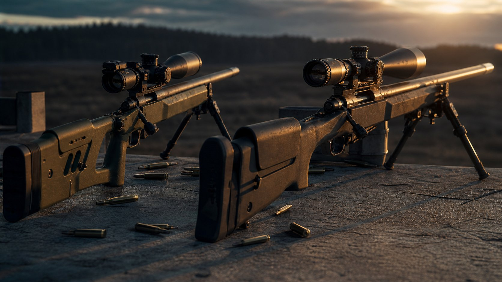

1. Rôle dans le meta S7
Les DMR gagnent les cartes ouvertes (Northridge, Airport longue portée). Le M110 avec Binary Trigger S7 (double balle par pression) est la révélation de la saison : 260 RPM + trigger à 2 coups = 400+ RPM effectifs pour le peek. MK14 et SJ16 restent les rois de la frappe de cinquante mètres, T88 l'entrée de gamme.
2. Conseils de jeu
- Munitions d'abord : en S7, la RNG de pénétration T5/T6 a disparu — la bonne mun gagne presque toujours. Tier 3 minimum, Tier 4-5 pour les modes haut de gamme.
- Caps par mode : Normal = T4 max, Lockdown = T5 max, Forbidden = T6. Adaptez votre kit au lobby, pas à votre ego.
- M110 Binary Trigger : jouez-la en peek-binaire (two-tap) — 2 balles, back, reposition.
- Adoptez une optique 4–6x : jamais 8x+ sur un DMR, la cible est trop proche la moitié du temps.
- En duo : un DMR overwatch + un SMG pusher = la composition la plus rentable du jeu.
À retenir
Un DMR sans couverture = un tier-parti gratuit. Après chaque tir, bougez. Toujours.
Meta complet
Croisez ces analyses avec la Tier List S7 complète et nos builds recommandés (A545 900 RPM, AK-12 laser budget, M24 oneshot).
Fusils de marqueur : le pont entre le fusil et le sniper
Un DMR occupe l'espace entre le fusil d'assaut et le fusil de precision, et sa caracteristique distinctive est la cadence semi-automatique : de 225 a 850 coups par minute. Le M110 se distingue avec 80 metres de portee et 300 coups par minute, ce qui en fait le choix naturel quand on veut un second tir sans bouger de son angle. Le MK14 monte a 700 coups par minute mais descend a 55 metres. Les deux vers l'extremite opposee : le VSS, avec 850 coups par minute mais seulement 26 metres de portee, est un DMR de proximite ; le SVDS, avec 225 coups par minute et 83 metres, est un DMR de tir semi-selectif. A 225 coups par minute, le SVDS ne permet pas de suivre une cible en deplacement : chaque tir est un engagement distinct. L'U191 fait 750 coups par minute avec 64 metres de portee, mais son ergonomie de 46 en fait le plus lourd a manier de la famille.
| Arme | Calibre | Cadence | Ergonomie | Portée (m) | Recul vert. | Modes de tir |
|---|---|---|---|---|---|---|
| SJ16 Bolt-Action Rifle | .338 Lapua | 26 | 32 | 125 | 11 | Manuel |
| M24 Bolt-Action Rifle | 7.62×51mm | 30 | 39 | 120 | 7 | Manuel |
| Mosin-Nagant Bolt-Action Rifle | 7.62×54mm | 28 | 22 | 100 | 9 | Manuel |
| SVDS Marksman Rifle | 7.62×54mm | 225 | 44 | 83 | 43 | Semi-automatique |
| M110 Marksman Rifle | 7.62×51mm | 300 | 58 | 80 | 58 | Semi-automatique |
| U191 Marksman Rifle | 5.8×42mm | 750 | 46 | 64 | 63 | Semi-automatique / Automatique |
| MK14 Marksman Rifle | 7.62×51mm | 700 | 59 | 55 | 57 | Semi-automatique / Automatique |
| VSS Marksman Rifle | 9×39mm | 850 | 57 | 26 | 65 | Semi-automatique / Automatique |
3. Les règles qui dictent le DMR
Un DMR est un fusil de précision qu'on accepte de tirer en semi-automatique. Le compromis est net : vous perdez la mitraillette, vous gagnez la capacité de tuer à travers une fenêtre, un porche, un toit. C'est l'arme de la ligne de vue longue sur les cartes ouvertes.
- Plafonds par mode : Normal = T4 maximum, Lockdown = T5 maximum, Forbidden = T6. Le choix du mode décide de votre tier avant même votre budget.
- Plafond de valeur : 900 000 K d'équipement en Lockdown. Au-delà, le raid refuse de démarrer.
- RNG de pénétration supprimée : depuis la S7, la bonne munition traverse presque toujours. comptez sur votre munition, pas sur la chance.
- TTK allongé, headshots récompensés : la précision compte davantage qu'en S6. Le premier tir placé vaut plus qu'une rafale.
4. Les munitions à connaître
| Munition | Armes | Ce qu'elle change |
|---|---|---|
| 7.62×51mm M80 (T5) | M110, SVDS | La montée en puissance maximale d'un DMR : un tir Supported suffit à percer un T5. |
| 7.62×54mm LPS (T4) | Mosin-Nagant, M24 | Dégâts enormously élevés, mais la balle LPS perd de la vitesse en fin de course. |
| 8.8×24mm (T5) | M24 (variante) | Munition de précision, la meilleure contre les armures lourdes si votre build l'autorise. |
| 5.56×45mm AP (T5) | SVD, G28 | Plus légère, plus maniable, moins de dégâts par tir mais un recoil plus facile à tenir. |
5. Quel kit pour quel budget
| Profil | Budget | Configuration | Usage |
|---|---|---|---|
| Budget serré | 80 000 – 140 000 K | Mosin-Nagant, 7.62×54 LPS | Sniper solo, terrain découvert |
| Équipier | 150 000 – 280 000 K | SVDS ou M110, 7.62×51 M80 | Appui longue distance en escouade |
| Longue distance | 250 000 K et plus | M24, optique 8x | Postes de tir longue distance |
6. Les erreurs qui coûtent cher
- Tirer en rafale avec un DMR : la courbe de recul est complètement différente, chaque tir compte.
- Oublier le bipied ou le support : à 200 m, sans appui, le premier tir est un hasard.
- Choisir du 7.62×54 LPS contre un T6 : le LPS perd sa vitesse, il faut toucher la zone de tête ou une partie non protégée.
- Se placer dans un champ de tir dégagé : un DMR qui n'a pas d'angle de tir n'est qu'une arme.views grosse.
7. FAQ
Quel DMR est le meilleur ?
Le SVDS et le M110 dominent la catégorie longue. Le SVD est plus maniable, le M24 est le roi du one-shot.
DMR ou sniper ?
Si votre équipe vous pousse vers l'avant et que vous tirez souvent, prenez un DMR. Si vous tenez une position, prenez un sniper.
Quel optique ?
Un 2x pour rester mobile, un 4x pour le mid-range, un 8x pour le one-shot longue distance. Le grossissement coûte cher en temps de visée.
Le DMR vaut-il son prix ?
Il n'a de valeur que si vous savez le placer. Un M110 entre les mains d'un joueur qui ne bouge pas vaut trois fois un A545 entre les mains d'un joueur qui court.